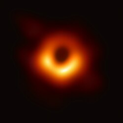
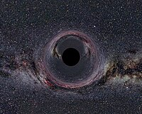
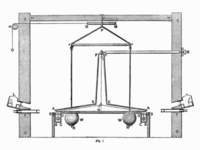

Črna luknja je v astrofiziki območje prostora-časa, v katerem je gravitacijska sila tolikšna, da ne more nič, niti svetloba ali drugo elektromagnetno valovanje, zapustiti dogodkovnega obzorja. Njeno gravitacijsko polje je tolikšno, da ubežna hitrost (druga kozmična hitrost) presega hitrost svetlobe, zato je dobila pridevnik »črna«. Splošna teorija relativnosti napoveduje, da lahko dovolj gosta masa deformira prostor-čas v taki meri, da nastane črna luknja. Meja pobega se imenuje dogodkovno obzorje. Čeprav močno vpliva na usodo in okoliščine telesa, ki ga prečka, v skladu s splošno teorijo relativnosti nima krajevno zaznavnih značilnosti. Črna luknja je v mnogih ozirih podobna idealnemu črnemu telesu, saj ne seva nobene svetlobe. Poleg tega teorija kvantnega polja v ukrivljenem prostoru-času napoveduje, da dogodkovno obzorje seva Hawkingovo sevanje z enakim spektrom kot črno telo s temperaturo, ki je obratno sorazmerna njegovi masi. Ta temperatura je na ravni milijoninke kelvina, zato je praktično ni mogoče neposredno izmeriti.
Besedo »črna luknja« je v ameriški angleščini (black hole) 18. januarja 1964 prvič uporabila novinarka Ann Ewing v svojem članku Black Holes' in Space v poročilu na srečanju Ameriške zveze za napredek znanosti (AAAS). Wheeler, ameriški fizik, eden od Einsteinovih zadnjih sodelavcev in naslednikov, je uporabil izraz leta 1967 na predavanju, zaradi česar so mislili, da je on skoval izraz. Izraz je uporabil tudi naslednje leto v članku za Scientific American. Verjetno je izraz v tem času poznalo več majhnih skupin, ki so raziskovale na tem področju. Bil je krajši nadomestek za izraz »gravitacijsko popolnoma kolapsirana zvezda (telo)« (gravitationally completely collapsed star (object)). Kmalu po tem so izraz črna luknja sprejeli v splošnem in ime se je prijelo. Večkrat uporabljajo tudi izraz kolapsar. Feynman je rabil še izraz črvina (wormhole), vendar ne v današnjem smislu.
Znano je, da se črne luknje nahajajo v središčih praktično vseh galaksij. Obstajajo tudi v rentgenskih dvozvezdjih, kot je Labod X-1, ali pa so prosto tavajoče po medzvezdnem prostoru. Submasivne črne luknje, ki ležijo več tisoč svetlobnih let narazen, se zaradi združenja galaksij tudi same združijo. Do zdaj odkriti črni luknji z najmanjšo medsebojno razdaljo ležita v galaksiji NGC 7727 in sta med seboj oddaljeni 1600 svetlobnih let.Leta 2021 je bila odkrita nova črna luknja v sosednji galaksiji Veliki Magellanov oblak. Črna luknja je od Zemlje oddaljena 160.000 svetlobnih let.
Gravitacijo so začeli preučevati že zgodaj – Newton je leta 1687 objavil zakon splošne gravitacije, po katerem se sila med telesoma sorazmerno povečuje z njunima masama in zmanjšuje z razdaljo med njima na kvadrat. Ta zakon je bil temelj za razumevanje gibanja planetov in teles v vesolju.V 18. stoletju so se pojavile prve drzne zamisli o telesih z izjemno močno gravitacijo. Bošković je predlagal, da je gravitacija lahko tudi odbojna na zelo majhnih razdaljah. John Michell pa je bil prvi, ki je leta 1768 pomislil na objekt, danes znan kot temna zvezda – tako masivno telo, da svetloba ne bi mogla uiti njegovi gravitaciji. Svetlobo so takrat razumeli kot delce z maso.Michell je predlagal uporabo torzijske tehtnice za merjenje gravitacije, a poskusov ni izvedel. Njegovo idejo je nadaljeval Henry Cavendish, ki je leta 1798 uspešno izmeril gostoto Zemlje in s tem posredno tudi gravitacijsko konstanto.Neodvisno je do podobnega sklepa prišel Laplace, ki je izračunal, da bi lahko zelo veliko telo zadržalo svetlobo – čeprav še znotraj klasične fizike. Menil je, da bi takšnih teles (temnih zvezd) lahko bilo veliko, a je idejo kasneje opustil, saj se je zdela preveč neverjetna.V 19. stoletju se razvoj teh zamisli ustavi, saj je prevladala teorija, da svetloba nima mase in zato nanjo gravitacija ne more vplivati. Šele Einsteinova splošna relativnost v 20. stoletju je ponovno odprla pot ideji o črnih luknjah, ki temeljijo na popolnoma drugačnem (relativističnem) razumevanju prostora, časa in gravitacije.
Če bi šel v črno luknjo, bi se na začetku začel raztezati zaradi močne gravitacije, kar bi pripeljalo do "spaghettifikacije", kjer bi tvoje telo postalo podolgovato. Ko bi prečkal dogodkovni obzor, bi zunanji opazovalec videl, da se tvoj čas upočasni, dokler se ne ustavi. V notranjosti črne luknje bi padel proti singularnosti, kjer bi bila gravitacija in gostota neskončni. V tem trenutku bi bilo tvoje telo uničeno, saj bi v singularnosti prostor in čas postala popolnoma izkrivljena, kar pomeni, da bi bila vsaka običajna fizika neveljavna. Preživetje ni možno, saj ni nobenega načina za pobeg iz črne luknje.
Na podlagi tega kako so nastale in na podlagi njihove mase je znanih več vrst črnih lukenj:
-mikročrne luknje
-prvobitne črne luknje
-zvezdne črne luknje
-srednje težke črne luknje
-supermasivne črne luknje